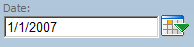
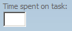
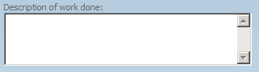
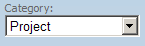
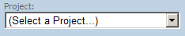
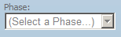
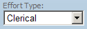
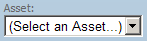
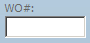

To enter a task you use the main task entry form. There is several required fields like Date, Time, Work Done, and Category. Depending on the category choosen, other fields might be required as well. The form uses validation to make sure you enter everything correctly, but please be sure to follow your manager's instructions on how best to fill out each option with a particular task.
Today's date will automatically be populated in this field, but you can also enter any date or use the date picker to select another date.

Enter the time spent on the task in quarter hour increments.
Some Examples:

Enter a brief description of what work was done.

Select the appropriate category that best fits your task. The default is "Project", use this for any project work.

| Category Name | Description | Example |
| Project | Time spent working on a project or new solution request. Projects are have assigned project managers and are defined in the PM policy. | Setup of a new site on the network. The deployment of Office 2007. |
| Administration | General Duties that do not fall in the other categories. | Attending a staff meeting. Timekeeping. Answering email. |
| Break/Fix | Fixing a hardware or software problem. This category is used most often by the helpdesk, but it can be used by other team members. | Fixing a printing problem. Resetting an account that is locked out. |
| IMACD | An installation, moves, adds, changes, and deletes. | Adding a new computer to the network. Changing a user account. Removing a computer from the network. Installing a new application on a computer. Moving equipment to a new location. |
| Maintenance | Activity involved in maintaining something in good working order. | Applying patches to a program or OS. Checking system logs. |
| Programs | Sponsored continuous activities that include planning, monitoring, and reporting of ongoing activities to produce a product or products. | Records Management |
If you select the Project category you must pick a project. Other category selections will either prevent you from picking a project (like Administration) or make it optional (like Maintenance).

If you select a Project you must also select a phase. This field will auto pick a phase according to the PMO Project Board, so in most cases you won't have to select a phase. However, if the Project Board is not correct or if you are working a different phase then you would need to select the correct one.

Select the appropriate effort type that best fits your task. You can find more information about the various effort types on the Effort Type page. Please note on that page that you will find core effort types highlighted in bold text that are common between all sections. The rest are unique to your section.


Optional field to record the work order number from our Track-It! application.
